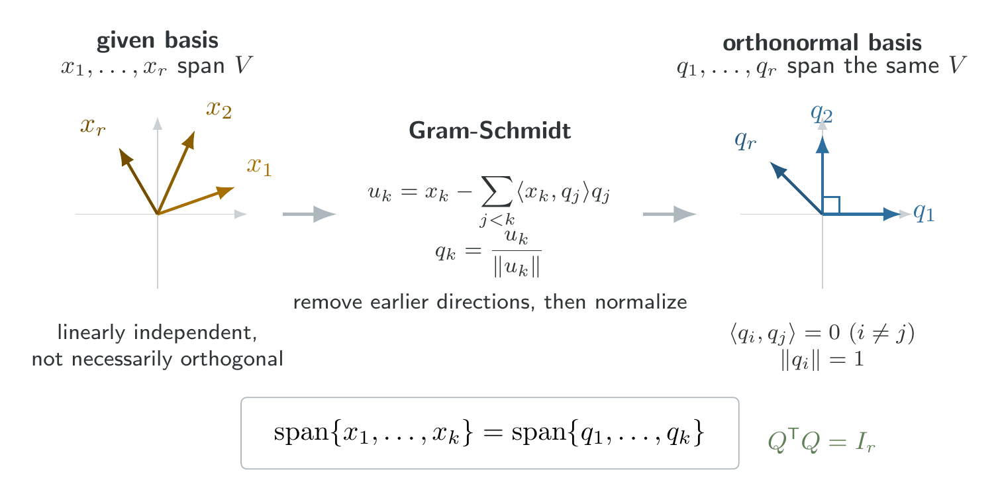
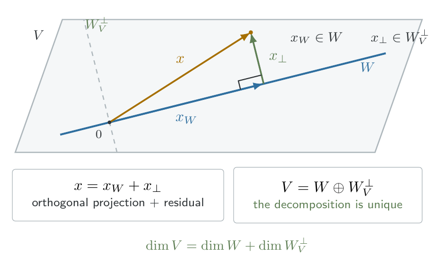

Appendix B — Linear Algebra Review
1 Vector spaces and their structures
1.1 Vector spaces and subspaces
Definition 1 (Vector space) A set \(\mathcal V\) is a vector space if, for any \(\mathbf{u}, \mathbf{v}, \mathbf{w}\in \mathcal V\) and scalars \(a, b\), operations of vector addition and scalar multiplication are defined such that
- \((\mathbf u + \mathbf v) + \mathbf w = \mathbf u + (\mathbf v + \mathbf w)\)
- \(\mathbf u + \mathbf v = \mathbf v + \mathbf u\)
- There exists a vector \(\mathbf 0\in \mathcal V\) such that \(\mathbf u + \mathbf 0 = \mathbf u = \mathbf 0 + \mathbf u\) for any \(\mathbf u \in \mathcal V\).
- For any \(\mathbf u \in \mathcal V\), there exists \(\mathbf w \equiv -u\) such that \(\mathbf u + \mathbf w = 0 = \mathbf w + \mathbf u\).
- \(a (\mathbf u + \mathbf w) = a\mathbf u + a\mathbf w\).
- \((a + b)\mathbf u = a\mathbf u + b \mathbf u\).
- \((ab)\mathbf u = a(b\mathbf u)\).
- There exists a scalar \(1\) such that \(1\mathbf u = \mathbf u\).
A standard example is \(\R^n=\{(x_1, \ldots, x_n)^\top: x_i \in \R\}\). A plane passing through the origin in \(\R^3\) is also a vector space under the usual operations.
Definition 2 (Subspace) Let \(\mathcal V\) be a vector space, and let \(\mathcal W\) be a set with \(\mathcal W\subset \mathcal V\). \(\mathcal W\) is a subspace of \(\mathcal V\) if \(\mathcal W\) is a vector space using the same definitions of vector addition and scalar multiplication as for \(\mathcal V\).
Theorem 1 (Subspace criterion) Let \(\mathcal V\) be a vector space, and let \(\mathcal W\) be a nonempty subset of \(\mathcal V\). If \(\mathcal W\) is closed under vector addition and scalar multiplication, then \(\mathcal W\) is a subspace of \(\mathcal V\).
Equivalently, we need to verify \(\mathcal u, \mathcal v\in \mathcal W\implies u+v \in \mathcal W\) and \(a\in \R, \mathcal u\in \mathcal W \implies a\mathbf u \in \mathcal W\).
Proof. Since \(\mathcal W\) is nonempty, we can choose an arbitrary \(\mathbf w \in \mathcal W\). Closure under scalar multiplication implies \(\mathbf 0 \mathbf w = \mathbf 0 \in \mathcal W\). For any \(\mathbf u \in \mathcal W\), we also have \((-1)\mathbf u = -\mathbf u \in \mathcal W\). Thus the additive identity and additive inverses exist in \(\mathcal W\). The remanining vector-space axioms are inherited from \(\mathcal V\), since the addition and scalar multiplication operations are unchanged. Therefore \(\mathcal W\) is a vector space and hence a subspace.
Consider \(W = \{(x, y, z)^\top \in \R^3: y = z\}\). If \(\mathcal u = (a, b, b)^\top\) and \(v=(c,d,d)^\top\), then
\[ u+ v = (a+ c, b+d, b+d)^\top \in W \]
and
\[ \alpha u = (\alpha a, \alpha b, \alpha b)^\top \in W \]
Hence \(W\) is a subspace of \(\R^3\).
1.2 Linear combinations, span, and linear independence
Definition 3 (Span) Given \(\mathbf{v}_1, \ldots, \mathbf{v}_r\in \mathcal V\), a linear combination is a vector of the form
\[ x = \sum_{i=1}^r a_i \mathbf v_i \]
The set of all such linear combination is
\[ \mathrm{span}\{\mathbf v_1, \ldots, \mathbf v_r\} = \left\{\sum_{i=1}^r a_i\mathbf v_i: a_i\in \R \right\} \]
Theorem 2 (Span is a subspace) The span of any finite collection of vectors in \(\mathcal V\) is a subspace of \(\mathcal V\).
Proof. Let \(\mathcal W=\mathrm{span}\{\mathbf v_1, \ldots, \mathbf v_r\}\). The zero vector belongs to \(\mathcal W\) by choosing every coefficient to be zero.
For arbitrary \(\mathbf x, \mathbf y \in \mathcal W\), we can write
\[ \mathbf x = \sum_{i=1}^r a_i \mathbf v_i, \quad \mathbf y = \sum_{i=1}^r b_i \mathbf v_i. \]
Then
\[ \mathbf x + \mathbf y = \sum_{i=1}^r (a_i + b_i) \mathbf v_i \in \mathcal W \]
Similarly, for any scalar \(c\),
\[ c\mathbf x = \sum_{i=1}^r (ca_i)\mathbf v_i \in \mathcal W. \]
Theorem 1 establishes the result.
Definition 4 (Column space) For a matrix \(A\in \R^{n\times p}\) with columns \(a_1, \ldots, a_p\),
\[ \mathcal C(A) = \mathrm{span}\{a_1, \ldots, a_p\}= \{A\beta:\beta \in \R^p\}. \]
Thus \(\mathcal C(A)\) is the collection of all vectors that can be obtained by multiplying \(A\) by a coefficient vector.
Some refer \(\mathcal C(A)\) as the range space of \(A\) and write it \(R(A)\). This concept is fundamental to linear models, because the possible fitted mean vectors of the model \(Y = X\beta + \epsilon\) lie in \(\mathcal C(X)\).
Definition 5 (Linear independence) Vectors \(\mathbf v_1, \ldots, \mathbf v_r\) are linear independent if
\[ \sum_{i=1}^ r a_i \mathbf v_i = \mathbf 0 \implies a_1 = \cdots = a_r = 0 \]
Otherwise, they are linearly dependent.
An equivalent characterization is that a collection is linearly dependent if one vector can be expressed as a linear combination of the others. For example,
\[ v_1 = \begin{pmatrix}1 \\ 0\end{pmatrix}, \quad v_2 = \begin{pmatrix}0 \\ 1\end{pmatrix}, \quad v_3 = \begin{pmatrix}1 \\ 1\end{pmatrix} \]
are linearly dependent because \(v_3 = v_1 + v_2\).
1.3 Basis and dimension
Definition 6 (Basis) A collection \(\{\mathbf v_1, \ldots, \mathbf v_r\}\) is a basis for \(\mathcal V\) if it satisfies both conditions:
- The vectors span \(\mathcal V\).
- The vectors are linearly independent.
A basis therefore contains enough vectors to represent every vector in the space, without redundancy.
Theorem 3 (Invariance of basis size) Every basis of a finite-dimensional vector space contains the same number of vectors.
Proof. We use the following elementary consequence of linear independence, called the Steinitz exchange lemma:
If a collection of \(m\) vectors is linearly independent and another collection of \(n\) vectors spans the same space, then \(m\leq n\).
To establish this lemma, suppose \(\{u_1, \ldots, u_n\}\) spans the space and \(\{v_1, \ldots, v_m\}\) is linearly independent. We can express \(v_1\) as a combination of the \(u_i\). At least one coefficient is nonzero; therefore, one \(u_i\) can be solved for in terms of \(v_1\) and the remaining \(u_i\). Replacing that \(u_i\) with \(v_1\) preserves spanning.
Proceed inductively. Since the \(v_i\) are independent, each new \(v_i\) cannot lie in the span of the previously inserted \(v_j\). Consequently, another original \(u_i\) can be replaced while preserving spanning. We can perform at most \(n\) such replacements, so \(m\leq n\).
Now suppose \(B_1\) and \(B_2\) are two bases with \(r\) and \(s\) vectors, respectively. Because \(B_1\) is independent and \(B_2\) spans, \(r\leq s\). Reversing their roles gives \(r\geq s\). Therefore \(r=s\).
Definition 7 (Dimension and rank) The dimension of a vector space is the number of vectors in any basis. For a matrix \(A\),
\[ \rank(A) = \dim \mathcal C(A). \]
Theorem 3 ensures that dimension and rank are well-defined, independent of the particular basis chosen.
Theorem 4 (Uniqueness of basis representation) If \(\{\mathbf v_1, \ldots, \mathbf v_r\}\) is a basis for \(\mathcal V\), every \(\mathbf x \in \V\) has a unique expression
\[ \mathbf x = \sum_{i=1}^r a_i \mathbf v_i \]
Proof. Existence follows from the spanning property. For uniqueness, suppose
\[ \mathbf x = \sum_{i=1}^r a_i \mathbf v_i = \sum_{i=1}^r b_i \mathbf v_i. \]
Subtracting, we have
\[ \mathbf 0 = \sum_{i=1}^r (a_i-b_i) \mathbf v_i \overset{\text{linear independence}}{\implies} a_i - b_i = 0 , \quad i=1,\ldots, r \]
Therefore \(a_i = b_i\) for every \(i\).
Note that, a vector has unique coordinates relative to a basis, even though different bases produce different coordinate vectors.
1.4 Sums and direct sums of subspaces
Definition 8 (Sum of subspaces) For two subspaces \(\U, \W \subseteq \V\), define
\[ \U + \W = \{\mathbf u + \mathbf w: \mathbf u \in \U, \mathbf w\in \W\}. \]
If additionally \(\U \cap \W = \{\mathbf 0\}\), the sum is called a direct sum, written \(\U \oplus \W\).
The intersection condition distinguishes a direct sum from a general sum.
Theorem 5 \(\U + \W\) is a subspace. Furthermore, if matrices \(A, B\) have the same number of rows,
\[ \mathcal C(\begin{bmatrix}A & B\end{bmatrix}) = \mathcal C(A) + \mathcal C(B) \]
Proof. If \(x=u_1+ w_1\) and \(y = u_2+w_2\), then
\[ x+ y = (u_1 + u_2) + (w_1 + w_2) \in \U + \W. \]
Also,
\[ cx = cu_1 + cw_1 \in \U + \W. \]
Since \(\mathbf 0 \in \U + \W\), Theorem 1 shows that the sum is a subspace.
For the column-space identity, observe that every linear combination of columns of \(\begin{bmatrix}A & B \end{bmatrix}\) can be written
\[ \begin{bmatrix} A & B \end{bmatrix} \begin{pmatrix}a \\ b \end{pmatrix} = Aa + Bb. \]
The first term belongs to \(\mathcal C\), and the second to \(\mathcal C(B)\). Conversely, every sum \(Aa + Bb\) is a linear combination of the concatenated columns. Hence the spaces coincide.
Theorem 6 (Uniqueness of direct-sum decomposition) If \(\U \cap \W = \{0\}\), then every \(x\in \U +\W\) has a unique decomposition
\[ x = u + w, \qquad u \in\U, w \in \W \]
Proof. Suppose \(x = u_1+ w_1 = u_2 + w_2\). Rearranging gives \(u_1 - u_2 = w_2 - w_1\). The left side belongs to \(\U\), while the right side belongs to \(\W\). Therefore their common value lies in \(\U \cap \W = \{0\}\), giving \(u_1 = u_2, w_1 = w_2\). Thus the decomposition is unique.
Theorem 7 (Dimension of a direct sum) If \(\U \cap \W = \{0\}\), then \(\dim(\U + \W) =\dim\U + \dim\W\)
Proof. Let \(u_1, \ldots, u_r\) from a basis for \(\U\), and \(w_1, \ldots, w_s\) a basis for \(\W\). Their union spans \(\U + \W\).
To show linear independence, we assume
\[ \sum_{i=1}^{r} a_i u_i + \sum_{j=1}^{s} b_j w_j = 0. \]
Then
\[ \sum_{i=1}^r a_i u_i = -\sum_{j=1}^s b_j w_j. \]
The common vector belongs to \(U\cap W\), and is therefore zero. By independence of each original basis, all \(a_i\) and \(b_j\) must be zero. The union is a basis consisiting of \(r+ s\) vectors. Hence
\[ \dim(\U + \W) = r + s. \]
A useful extension of Theorem 7 is
\[ \dim(\U + \W) = \dim \U + \dim \W - \dim(\U \cap \W). \]
Proof. Choose a basis \(z_1, \ldots, z_k\) for \(\U \cap \W\). Extend it to bases
\[ (z_1, \ldots, z_k , u_1, \ldots, u_r) \]
for \(\U\), and
\[ (z_1, \ldots, z_k, w_1, \ldots, w_s) \]
for \(\W\). The combined collection \(z_1, \ldots, z_k, u_1, \ldots, u_r, w_1, \ldots, w_s\) spans \(\U+ \W\).
To prove indepedence, any zero linear combination can be rearranged so that a linear combination of the \(w_j\) belongs to \(\U \cap \W\). Independence of the extended basis of \(\W\) forces every coefficient to \(w_j\) to vanish.
Thus,
\[ \dim(\U + \W) = k+ r + s \]
Since \(\dim\U = k + r\) and \(\dim \W = k+s\), the claimed formula follows.
2 Inner Products, Orthogonality, and Decompositions
2.1 Inner product and norm
Definition 9 (Euclidean inner product) For vectors \(x, y\in \R^n\),
\[ \langle x, y \rangle = x^\top y = \sum_{i=1}^n x_i y_i. \]
Their Euclidean norm is
\[ || x|| = \sqrt{x^\top x}. \]
Two vectors are orthogonal if \(x^\top y = 0\).
A collection \(\{q_1, \ldots, q_r\}\) is orthonomal if
\[ q_i^\top q_j =\begin{cases}1, & i = j, \\ 0, & i\neq j.\end{cases} \]
Orthonomal bases are especially useful because coordinates can be computed using inner products:
\[ x = \sum_{i=1}^r (q_i^\top x)q_i \quad \text{for } x \in \mathrm{span}\{q_1, \ldots, q_r\}. \]
Theorem 8 (The Gram-Schmidt Theorem) Every finite-dimensional inner-product space admits an orthonormal basis. More specifically, given a basis \(x_1, \ldots, x_r\), there exists an orthonomal basis \(q_1, \ldots, q_r\) satisfying
\[ \mathrm{span}\{q_1, \ldots, q_s\} = \mathrm{span}\{x_1, \ldots, x_s\} \]
for \(s= 1, \ldots, r\).
Construction
Set \(w_1 = x_1\), \(q_1 = \frac{w_1}{||w_1||}\). For \(s=2,\ldots, r\), we define
\[ w_s = x_s - \sum_{i=1}^{s-1}(x_s^\top q_i)q_i \]
and then \(q_s = \frac{w_s}{||w_s||}\).

Proof. We proceed by induction on \(s\). For \(s=1\), since \(x_1 \neq 0\), \(q_1 = \frac{x_1}{||x_1||}\) is well-defined, satisfies \(||q_1|| = 1\), and spans the same space as \(x_1\).
Suppose \(q_1,\ldots, q_{s-1}\) are orthonomal and span precisely the space generated by \(x_1,\ldots, x_{s-1}\). We define
\[ w_s = x_s - \sum_{i=1}^{s-1} (x_s^\top q_i) q_i. \]
For any \(j<s\),
\[ \begin{aligned} q_j^\top w_s &= q_j^\top x_s - \sum_{i=1}^{s-1} (x_s^\top q_i )q_j^\top q_i\\ &= q_j^\top x_s - (x_s^\top q_j) \\ &= 0. \end{aligned} \]
Thus \(w_s\) is orthogonal to all the previously constructed vectors.
Futhermore, \(w_s \neq 0\). Otherwise,
\[ x_s = \sum_{i=1}^{s-1}(x_s^\top q_i)q_i \in \mathrm{span}\{x_1, \ldots, x_{s-1}\} \]
contradicting the linear independence of the original basis. Therefore \(q_s = \frac{w_s}{||w_s||}\) exists and has unit norm.
Finally, the construction shows that \(q_s\) lies in the span of \(x_1, \ldots, x_s\), while rearranging the formula for \(w_s\) expresses \(x_s\) in the span of \(q_1, \ldots, q_s\). Hence the two spans are equal at each step, and the complete collection is an orthonormal basis.
2.2 Orthogonal Complements
Definition 10 (Orthogonal complement) For a subspace \(\W\subseteq \V\), define
\[ W_V^{\perp} = \{x\in \V: x^\top w = 0 \quad \forall w \in \W\} \]
When \(V= \R^{n}\), we write \(W^\perp\).
Corollary 1 (Trivial intersection) For any subspace \(\W\), \(\W \cap \W^\top = \{0\}\).
Proof. If \(x\in \W \cap \W^\top\), then \(x\in \W\) and \(x\) is orthogonal to every vector of \(\W\), including itself. Therefore
\[ x^\top x = || x||^2 = 0. \]
Positive definiteness of the Euclidean inner product implies \(x=0\).
Theorem 9 (Orthogonal decomposition theorem) If \(\W \subseteq \V\), then \(\W_V^\perp\) is a subspace and
\[ \V = \W \oplus \W_V^\perp \]
Proof. First, \(\W_V\) is a subspace. If \(x, y\in \W_{V}^\perp\) and \(a, b \in \R\), then for every \(w\in W\).
\[ (ax + by)^\top w = ax^\top w + by^\top w = 0. \]
Thus \(ax + by \in \W_{V}^\perp\). Next, we select an orthonormal basis \(q_1, \ldots, q_r\) for \(\W\) using Gram-Schmidt. Extend this basis to an orthonormal basis
\[ q_1, \ldots, q_r, q_{r+1}, \ldots, q_n \]
for \(V\), where \(n=\dim V\). Every \(x\in \V\) can therefore be written as
\[ x= \sum_{i=1}^n (x^\top q_i)q_i. \]
Separate this into
\[ x = \underbrace{\sum_{i=1}^r (x^\top q_i) q_i}_{x_W} + \underbrace{\sum_{i=r+1}^n (x^\top q_i)q_i}_{x_\perp} \]
Clearly \(x_W\in \W\). Because \(q_{r+1},\ldots, q_n\) are orthogonal to every vector in \(\W\), we have \(x_\perp \in \W_V^\perp\). Therefore \(\V = \W + \W_V^\perp\). By Corollary 1, their intersection is \(\{0\}\), so the sum is direct.
Corollary 2 (Unique orthogonal decomposition) Every \(x\in \V\) can be expressed uniquely as \(x=x_W + x_\perp\) where \(x_W \in \W\) and \(x_\perp \in W_V^{\perp}\). Moreover,
\[ \dim V = \dim W + \dim W_V^\top \]

Proof. Existence follows from Theorem 9, uniqueness from Theorem 6, and the dimension formula from Theorem 7.
Theorem 10 (Orthogonal complement of an intersection) For subspaces \(\U, \W \subseteq \R^n\),
\[ (\U \cap \W )^{\perp} = \U^\perp + \W^\perp \]
Proof. We first establish two identities \((S^\perp)^\perp = S\), \((U+W)^\perp = U^\perp \cap W^\perp\). The first follows from orthogonal decomposition: if \(x\in (S^\perp)^\perp\), we can write \(x = s+ t\) with \(s\in S\), \(t\in S^\perp\). Since \(x\perp t\),
\[ 0 = x^\top t = s^\top t + t^\top t = ||t||^2, \]
so \(t=0\) and \(x=s \in S\).
For the second identity, a vector is orthogonal to every sum \(u+w\) when it is orthogonal to both \(U\) and \(W\). Applying this identity to \(U^\perp\) and \(W^\perp\),
\[ (U^\perp + W^\perp)^\perp = (U^\perp)^\perp \cap (W^\perp)^\perp = U\cap W. \]
Taking orthogonal complements of both sides proves
\[ U^\perp + W^\perp = (U\cap W)^\perp \]
This also establishes the two important identities:
- \((U+ W)^\perp = U^\perp \cap W^\perp\) and
- \((W^\perp)^\perp = W\).
3 Matrices and linear transfromations
3.1 Matrix operations and terminology
| Concepts | Definition |
|---|---|
| Square matrix | \(A\in \R^{n\times n}\) |
| Transpose | \((A^\top)_{ij} = A_{ji}\) |
| Symmetric matrix | \(A= A^\top\) |
| Diagonal matrix | \(A_{ij} = 0\) for \(i\neq j\) |
| Identity matrix | \(I_n =\mathrm{diag}(1, \ldots, 1)\) |
| Nonsingular matrix | Square matrix possessing an inverse |
| Null space | \(\mathcal N(A) = \{x: Ax = 0\}\) |
Matrix multiplication represents composition of linear transformations. If \(A: \R^p \to \R^n\), then
\[ T_A(x) = Ax \]
is linear because
\[ A(ax + by) = aAx + bAy. \]
The column space is the image of this transformation, whereas the null space is its kernel.
3.2 Matrix Invertibility
Theorem 11 (Invertibility and full rank) For \(A\in \R^{n\times n}\), the following are equivalent:
\[ A \text{ is nonsingular} \Longleftrightarrow \mathrm{rank}(A) = n \]
Proof. Suppose \(A\) is nonsingular. If \(Ax = 0\), multiplying by \(A^{-1}\) gives
\[ x = A^{-1}Ax = A^{-1} 0 = 0. \]
Thus the columns of \(A\) are linearly independent. Since there are \(n\) columns in \(\R^{n}\), they form a basis, so \(\mathrm{rank}(A) = n\).
Conversely, suppose \(\mathrm{rank}(A) = n\). THe columns of \(A\) form a basis for \(\R^{n}\). For each standard basis vector \(e_i\), there exists a unique vector \(b_i\) such that \(Ab_i = e_i\). We construct \(B= [b_1, \ldots, b_n]\). Then
\[ AB = [Ab_1, \ldots, Ab_n] = I. \]
For every \(x\), \(A(BAx) = Ax\). Since \(A\) has linearly independnent columns, this implies \(BAx = x\). Hence \(BA = I\). Therefore \(B=A^{-1}\), and \(A\) is nonsingular.
Corollary 3 (Singularity and nontrivial null space) \(A_{n\times n}\) is singular if and only if there exists \(x\neq 0\) such that \(Ax = 0\).
Proof. By Theorem 11, \(A\) is singular when its columns are linearly dependent. Linear dependence means that there exists a nonzero coefficient vector \(x\) for which the linear combination of the columns vanishes, i.e. \(Ax = 0\).
3.3 Rank-nullity theorem
Theorem 12 (Rank-nullity theorem) If \(A\in \R^{m\times n}\), then \(\dim\mathcal N(A) +\mathrm{rank}(A) = n\).
Proof. Let \(k=\dim \mathcal N(A)\), and pick a basis \(v_1, \ldots, v_k\) for \(\mathcal N(A)\). Extend this basis to a basis for \(\R^n\):
\[ v_1, \ldots, v_k, w_1, \ldots, w_{n-k}. \]
We claim that \(Aw_1, \ldots, Aw_{n-k}\) form a basis for \(\mathcal C(A)\). To establish spanning, take any \(y\in \mathcal C(A)\). Then \(y = Ax\) for some \(x\in \R^{n}\). Express \(x\) using the chosen basis:
\[ x = \sum_{i=1}^k a_i v_i + \sum_{j=1}^{n-k}b_j w_j. \]
Applying \(A\), we have
\[ y = Ax = \sum_{j-1}^{n-k} b_j Aw_j, \]
because \(Av_i = 0\). Thus the \(Aw_j\) span \(\mathcal C(A)\).
To establish independence, suppose
\[ \sum_{j-1}^{n-k} b_j Aw_j = 0. \]
Then \(\sum_j b_j w_j \in \mathcal N(A)\), so it can be expressed as a combination of \(v_1, \ldots, v_k\). This gives a linear independence among the original basis vectors, unless every \(b_j = 0\). Hence the \(Aw_j\) are independent. Therefore, \(\mathrm{rank}(A) = n-k\), which establishes the theorem.
For \(A\in \R^{m\times n}\), the four fundamental subspaces satisfy
\[ \mathcal C(A), \mathcal N(A^\top) \subseteq \R^m, \quad \mathcal C(A^\top), \mathcal N(A)\subseteq \R^n \]
Two orthogonality relationships are
\[ \mathcal C(A)^\perp = \mathcal N(A^\top) \quad \text{and} \quad \mathcal C(A^\top)^\perp = \mathcal N(A). \]
Proof. For \(y\in \R^{m}\),
\[ \begin{aligned} y\in \mathcal C(A)^{\perp} &\Longleftrightarrow y^\top Ax = 0 \quad \forall x\in \R^{n}\\ &\Longleftrightarrow A^\top y = 0 \\ & \Longleftrightarrow y\in \mathcal N(A^\top). \end{aligned} \]
The second identity follows by replacing \(A\) with \(A^\top\).
Combining these identities with orthogonal decomposition gives
\[ \begin{aligned} \R^m = \mathcal C(A) \oplus \mathcal N(A^\top)\\ \R^n = \mathcal C(A^\top) \oplus \mathcal N(A). \end{aligned} \]
4 Eigenvalues and Spectral Theory
4.1 Eigenvalues and eigenvectors
Definition 11 (Eigenvalue) For a square matrix \(A\), a scalar \(\lambda\) is an eigenvalue if there exists a nonzero vector \(v\) such that
\[ Av = \lambda v. \]
Equivalently,
\[ (A-\lambda I)v = 0, \]
so \(A-\lambda I\) is singular.
The corresponding eigenspace is
\[ E_\lambda = \mathcal N(A-\lambda I). \]
Its dimension is the geometric multiplicity of \(\lambda\).
Lemma 1 (Orthogonality of eigenvectors) If \(A\) is symmetric, eigenvectors corresponding to distinct eigenvalues are orthogonal.
Proof. Suppose \(Ax = \lambda x\), \(Ay = \mu y\), where \(\lambda \neq u\). Since \(A = A^\top\),
\[ x^\top Ay = (Ax)^\top y. \]
Therefore
\[ \mu x^\top y = \lambda x^\top y \implies (\lambda - \mu) x^\top y =0. \]
Because \(\lambda \neq \mu\), \(x^\top y = 0\).
4.2 Spectral Theorem
Theorem 13 (Eigenvector basis for the column space) If \(A\in \R^{n\times n}\) is symmetric, then \(\mathcal C(A)\) admits a basis consisting of eigenvectors corresponding to nonzero eigenvalues.
Proof. We establish the spectral decomposition by induction on the dimension. First, evey real symmetric matrix possesses a real eigenvector. One way to see this is to maximize the continuous function \(f(x) = x^\top Ax\) over the compact unit sphere \(\{x: ||x|| = 1\}\). At a maximizer \(u\), the Lagrange multiplier condition for the constraint \(u^\top u=1\) gives \(2Au = 2 \lambda u\), so \(Au = \lambda u\).
Now consider the orthogonal complement \(u^\perp\). For \(z\in u^\perp\),
\[ u^\top Az = (Au)^\top z = \lambda u^\top z = 0. \]
Hence \(Az \in u^\perp\): the orthogonal complement is invariant under \(A\). The restriction of \(A\) to \(u^\perp\) remains symmetric. By induction, \(u^\perp\) has an orthonormal eigenbasis. Adjoining \(u\) gives an orthogonal eigenbasis \(q_1, \ldots, q_n\) for \(\R^n\).
Now we express any \(x\in \R^n\) as \(x = \sum_{i=1}^n c_i q_i\). Applying \(A\),
\[ Ax = \sum_{i=1}^n c_i \lambda_i q_i. \]
Consequently, \(\mathcal C(A) = \mathrm{span}\{q_i: \lambda_i \neq 0.\}\).
Thus the nonzero-eigenvalue eigenvectors form a basis for the column space.
Theorem 14 Every real symmetric matrix \(A\) has an orthonormal basis of eigenvectors for \(\R^n\).
Proof. By Theorem 13 and the orthogonal complement relation, \(\mathcal C(A)^\perp = \mathcal N(A)\) for symmetric \(A\), the eigenspaces associated with nonzero eigenvalues, together with the zero eigenspace, span \(\R^n\).
Apply Gram-Schmidt within each eigenspace to produce an orthonormal basis there. Every linear combination of eigenvectors with the same eigenvalue remains an eigenvector for that eigenvalue. Eigenvectors from distinct eigenspaces are automatically orthogonal, by the previous Lemma 1. Combining these orthonormal bases therefore produces an orthonormal eigenbasis of \(\R^n\).
4.3 Orthogonal matrices and diagonalization
Definition 12 A square matrix \(Q\) is orthogonal if \(Q^\top Q = QQ^\top = I\). Equivalently, \(Q^{-1} = Q^\top\).
Theorem 15 \(Q\in \R^{n\times n}\) is orthogonal if and only if its columns form an orthonormal basis for \(\R^n\).